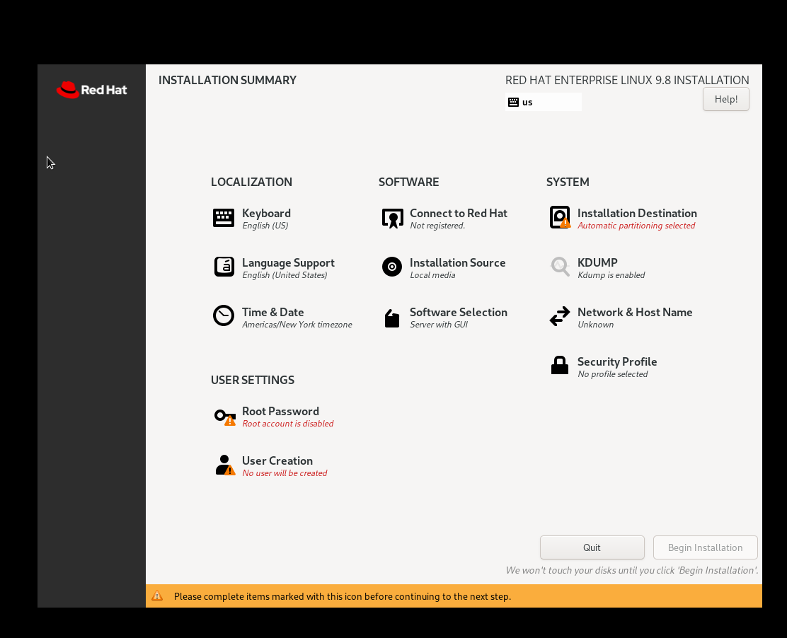
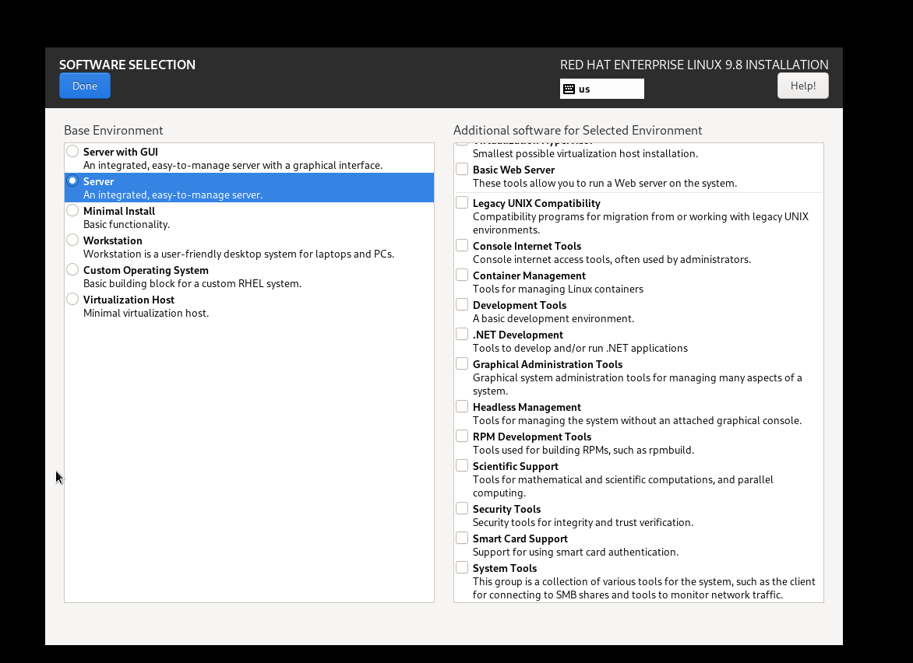
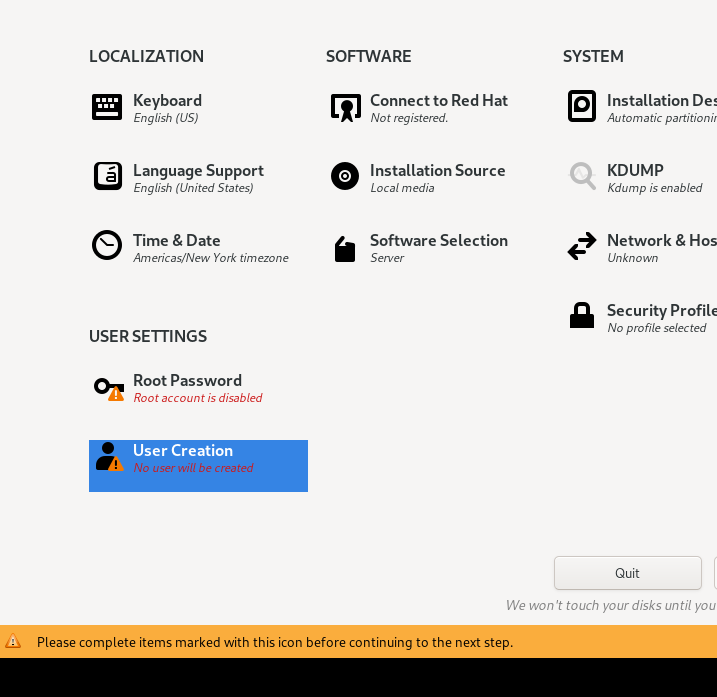
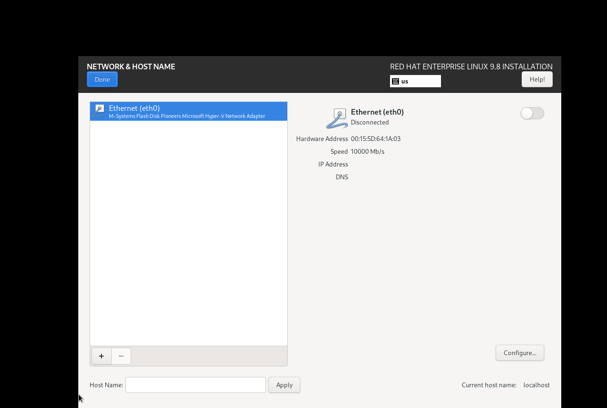
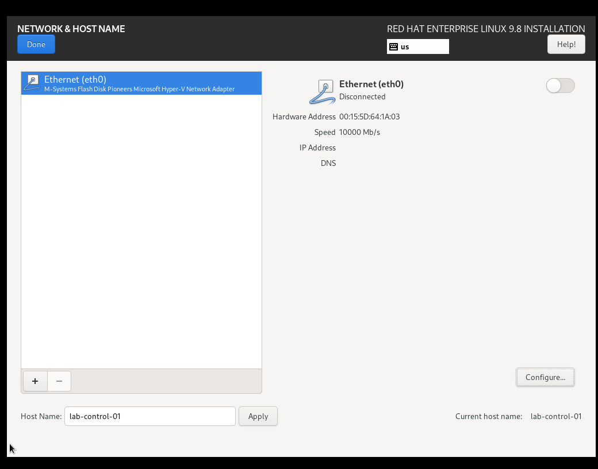
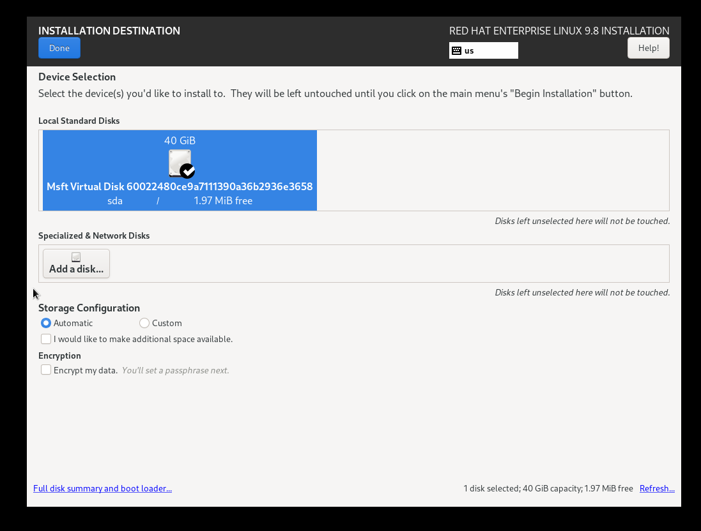
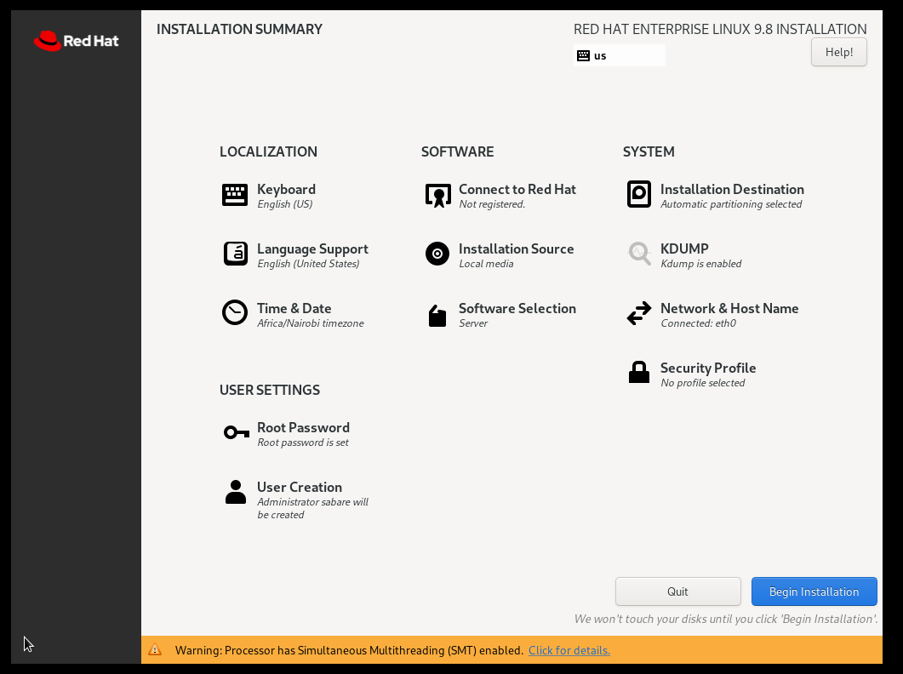

RHEL installation media and first VM¶
Decision and limits¶
RHEL was selected to practise the operating-system tools used in the reference environment. The reference environment's exact major/minor version is unknown. RHEL 9.8 is a lab choice, not a confirmed production match.
Use a personal Red Hat Developer Subscription for Individuals, subject to its current terms. Red Hat describes it as no-cost, self-supported access for up to 16 physical or virtual systems. This does not establish support coverage for the planned upstream Kubernetes installation.
Capacity checks¶
Run in Windows PowerShell:
Get-CimInstance Win32_OperatingSystem | Select-Object @{Name='TotalRAM_GB';Expression={[math]::Round($_.TotalVisibleMemorySize / 1MB, 1)}}, @{Name='FreeRAM_GB';Expression={[math]::Round($_.FreePhysicalMemory / 1MB, 1)}}
Get-Volume -DriveLetter C | Select-Object DriveLetter, @{Name='SizeGB';Expression={[math]::Round($_.Size / 1GB, 1)}}, @{Name='FreeGB';Expression={[math]::Round($_.SizeRemaining / 1GB, 1)}}
Observed before downloading/installing:
| Measurement | Value |
|---|---|
| Total usable RAM | 31.7 |
| Available RAM at the time | 18.7 |
| C: capacity | 476 |
| C: free space at the time | 198.9 |
The command labels say GB; these PowerShell conversions use binary units
(GiB). Windows reports the memory fields in KiB, hence dividing by 1MB
(1,048,576) converts those values to GiB. These are historical measurements,
not reservations or a guarantee of current free capacity.
Keep VM files outside Git¶
New-Item -ItemType Directory -Path "$env:USERPROFILE\HyperV\data-platform-lab" -Force
Source lives under Documents\AI Engineering\data-platform-lab; virtual
disks live under HyperV\data-platform-lab. ISOs remain in Downloads.
Obtain and verify the ISO¶
Download the RHEL 9.8 x86_64 DVD ISO from the official Red Hat page after
signing in. x86_64 matches this Intel laptop. The DVD ISO supplies local
installation packages; boot-only media depends more on a network source.
IDM initially captured auth.htm pages rather than the ISO. This suggested
an authentication redirect problem, but the exact cause was not verified.
The final ISO was subsequently downloaded successfully. Do not save signed
download URLs, account tokens or authentication pages in this repository.
Locate and hash the downloaded file:
Get-ChildItem -LiteralPath "$env:USERPROFILE\Downloads" -Filter '*rhel*.iso' -File -Recurse | Select-Object FullName, @{Name='SizeGB';Expression={[math]::Round($_.Length / 1GB, 2)}}
Get-FileHash -LiteralPath "$env:USERPROFILE\Downloads\rhel-9.8-x86_64-dvd.iso" -Algorithm SHA256 | Format-List
Verified filename: rhel-9.8-x86_64-dvd.iso, approximately 14.47 GiB.
The observed SHA-256 matches the value published on Red Hat's download page:
c0dd53b73406b85b40d6168d1748e605d71361b2992d282c408b7d7d2e1d2c80
Uppercase/lowercase does not change a hexadecimal hash. Compare the checksum for the exact version, architecture and image type; another ISO has another expected hash. This is an integrity comparison against the vendor's HTTPS page, not a separately performed signature verification.
Create the VM¶
Run in Administrator PowerShell. These creation commands have already been executed in this lab. Do not rerun them blindly.
New-VM -Name "lab-control-01" -Generation 2 -MemoryStartupBytes 3GB -NewVHDPath "$env:USERPROFILE\HyperV\data-platform-lab\lab-control-01\os.vhdx" -NewVHDSizeBytes 40GB -Path "$env:USERPROFILE\HyperV\data-platform-lab" -SwitchName "reservoir-lab-switch"
- Generation 2 provides UEFI virtual firmware.
- 3 GB is the initial startup memory allocation.
NewVHDSizeBytesgives the expanding virtual disk a maximum logical size of 40 GB. Its host file grows as data is written; it does not immediately reserve all 40 GB of physical disk capacity.SwitchNameconnects the VM to the prepared private network.New-VMcreates the machine but does not start it or install Linux.
Configure CPU and Secure Boot while the VM is off¶
Set-VMProcessor -VMName "lab-control-01" -Count 2
Set-VMFirmware -VMName "lab-control-01" -EnableSecureBoot On -SecureBootTemplate MicrosoftUEFICertificateAuthority
Two virtual processors share the host's physical CPU resources. The firmware template permits supported Linux bootloaders while keeping Secure Boot enabled.
Attach media and select DVD boot¶
Add-VMDvdDrive -VMName "lab-control-01" -Path "$env:USERPROFILE\Downloads\rhel-9.8-x86_64-dvd.iso"
Set-VMFirmware -VMName "lab-control-01" -FirstBootDevice (Get-VMDvdDrive -VMName "lab-control-01")
vmconnect.exe localhost "lab-control-01"
Add-VMDvdDrive inserts the ISO as a virtual DVD. FirstBootDevice chooses
that DVD before the empty virtual disk. vmconnect.exe opens the machine's
console on this host. Click Start and press a key if prompted to boot DVD.
The user confirmed reaching the RHEL installer boot menu. The next instruction was to choose Install Red Hat Enterprise Linux 9.8. Selecting it starts the installer; it does not alone prove that Linux has been installed.
Installer configuration (VM console)¶
These are graphical installer steps, not PowerShell commands. The final Installation Summary screenshot confirms the selections below. No passwords or account-registration secrets are stored in this guide.
Software, language and time¶

Starting state: Server with GUI, New York time zone and incomplete account settings. These are historical defaults, not the final lab configuration.
- Select Install Red Hat Enterprise Linux 9.8 in the boot menu.
- The resulting summary shows English (United States) language support and English (US) keyboard. Choose a different keyboard if needed for your hardware.
- Open Software Selection, select Server, leave optional add-ons unselected, then click Done.
- Open Time & Date, select Africa / Nairobi, then click Done.
The graphical installer can install a system without a graphical desktop. Server was chosen over Server with GUI to conserve resources and practise terminal/SSH administration. Minimal Install was considered, but Server was selected as the broader starting environment. Neither installs Kubernetes. Application dashboards will later be accessed through the Windows browser.
The time-zone setting controls local time display; it does not prove clock synchronisation. NTP/chrony was verified later in the node preparation guide.

Selection step: Server without a desktop. Container Management and the other optional add-ons were not needed for this initial OS installation.
Administrator account¶

Intermediate step: software selection is saved, but no user will yet be created. The later final summary confirms administrator sabare. The root password-entry screenshot is omitted; no password screenshots are needed.
The user created sabare. The final summary explicitly states that
administrator sabare will be created. Administrator membership permits
privileged commands through sudo after installation; this still needs a
post-installation test.
A root password was also set privately. The setup instruction was to uncheck Allow root SSH login with password before saving. The user reported that step done, but the effective SSH policy must be checked after installation. Use the named administrator for routine access and keep both passwords out of Git, screenshots and command history.
Static network settings¶
Open Network & Host Name:

Before configuration: the adapter is detected but switched off, with no address shown. This alone is not evidence of a Hyper-V network fault.
- Enter
lab-control-01in Host Name and click Apply. - Select
Ethernet (eth0)and click Configure. - On IPv4 Settings, choose Manual and add the following settings.
| Field | Value | Explanation |
|---|---|---|
| Address | 192.168.200.10 | Fixed address for this VM on the lab network |
| Netmask | 255.255.255.0 | Same subnet size as /24 |
| Gateway | 192.168.200.1 | Windows lab adapter; routes outbound traffic through NAT |
| DNS servers | 1.1.1.1, 8.8.8.8 | Public name resolvers for this home lab |
| Search domains | Empty | No internal DNS search domain configured yet |
- On General, enable automatic connection when available, if shown.
- Save and turn the Ethernet toggle ON.
- Confirm the displayed address and DNS settings, then click Done.
The adapter initially remained off after saving. Turning it on resolved the
disconnected state. The user reported address 192.168.200.10 and the DNS
servers displayed; the final summary confirms Connected: eth0.

Intermediate step: hostname application succeeded, but the Ethernet toggle still needed to be turned on. This is not a screenshot of a working connection.
No successful DNS query, outbound HTTPS test or post-reboot persistence test has yet been recorded. The hostname does not automatically create a DNS record on Windows. Public DNS is a local lab choice, not a production setting.
Installation destination and final review¶
Select the 40 GiB Microsoft virtual disk (sda) under Installation
Destination, choose Automatic storage configuration and click Done.
The screenshot shows encryption unchecked. The final partition layout has
not been inspected, so no specific LVM, filesystem or swap sizes are claimed.

Storage selection: sda is the VM's 40 GiB virtual disk. The displayed 1.97 MiB free prompted further review; its meaning was not independently established. The subsequent summary accepted the configuration.
The disk page displayed only 1.97 MiB free. That number was initially treated as evidence of existing partitions, but it alone did not establish a fault. The user clarified that no Reclaim Space dialog was present and provided a summary with no destination warning and Begin Installation enabled. No manual partition deletion or reclaim operation is confirmed.
Final summary observed:
| Item | Displayed state |
|---|---|
| Software Selection | Server |
| Installation Source | Local media |
| Time & Date | Africa/Nairobi |
| Installation Destination | Automatic partitioning selected; no warning icon |
| Network | Connected: eth0 |
| Root Password | Root password is set |
| User Creation | Administrator sabare will be created |
| Connect to Red Hat | Not registered |
| KDUMP | Enabled |
| Security Profile | No profile selected |
The summary also displayed an SMT-enabled warning. No CPU/SMT configuration change was made in response. No security profile selection does not imply that SELinux or the firewall is disabled; their actual state will be checked.

Evidence: final settings before Begin Installation. The Not registered label is historical; registration was completed later. This screen alone does not prove installation completion.
The user clicked Begin Installation, subsequently reported completion, and reached the installed RHEL login prompt after reboot. See the first-boot guide for screenshots and verification.
Pending installation work¶
- Verify whether installation media remains attached and adjust disk boot order if needed.
- Inspect effective SSH policy; named-user login and sudo have succeeded.
- Verify OS version, storage layout, swap, SELinux and firewall state.
- Verify time synchronisation; addressing, routing, DNS and HTTPS passed first-boot checks.
- Complete the metadata-download check; registration and SSH login were reported successful.
- Review actual VM configuration and resource consumption.
- Create workers later; no worker VMs or Kubernetes cluster are verified yet.
The proposed 3 GB allocation may need adjustment if the installer or workloads require more memory. Do not disable SELinux or the firewall merely to bypass an unexplained installation/networking problem.